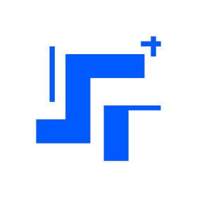
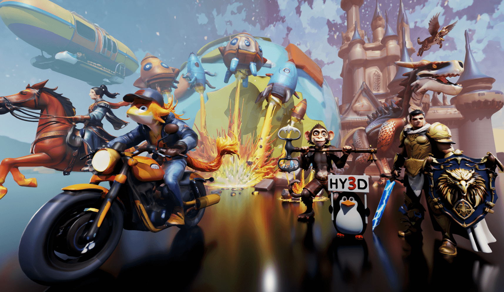
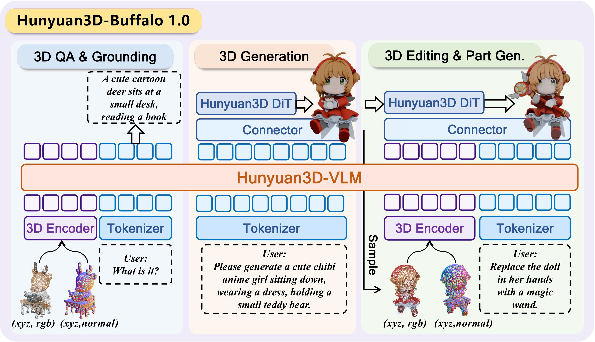
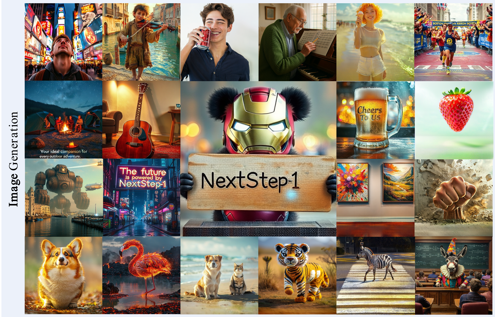

Hunyuan, Tencent (混元)
Senior Researcher · Mar 2026–Present
Current
Working ExperienceHunyuan, Tencent (混元)Senior Researcher · Mar 2026–Present CurrentInternshipsHunyuan, Tencent (混元)Research Intern · Oct 2025–Mar 2026  StepFun (阶跃星辰)Research Intern · Mar 2025–Oct 2025 Tongyi Lab, Alibaba (通义实验室)Research Intern · Jul 2024–Mar 2025 Selected Projects
Hunyuan3D Foundation Model
Ongoing
Core Contributor
A 3D foundation model that transforms texts/images into high-fidelity 3D assets with detailed geometry and physically based materials. 
Hunyuan3D-Buffalo 1.0
Core Contributor A unified 10B multimodal model for 3D generation, understanding, editing, and part generation. 
NextStep-1
A 14B autoregressive model for scalable text-to-image generation and image editing with continuous tokens.
xbench
A continuously updated benchmark for evaluating AI-agent productivity in real-world professional tasks. Selected Publications (first author & co-first author)
ServicesReviewer · IJCV, NeurIPS, CVPR, ICCV, ECCV |